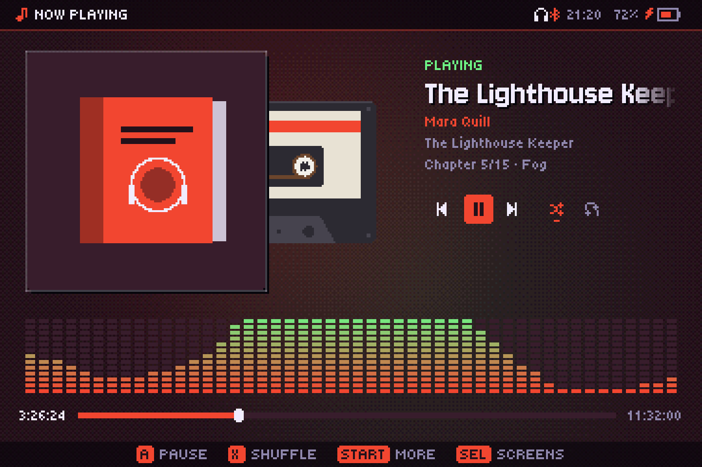
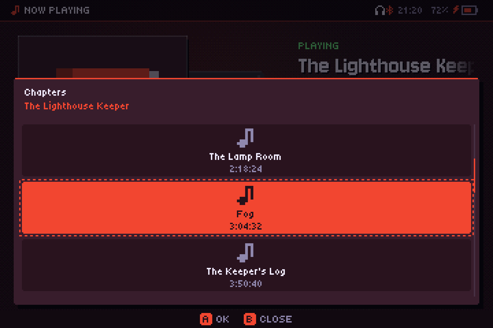
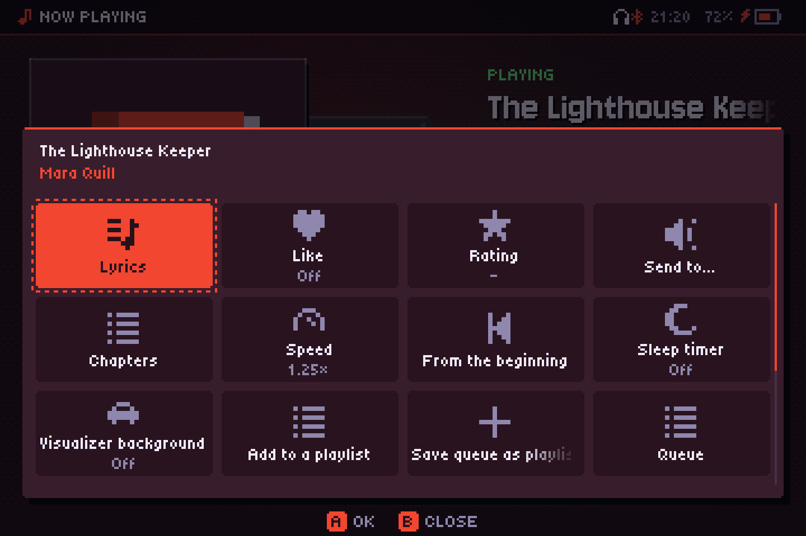
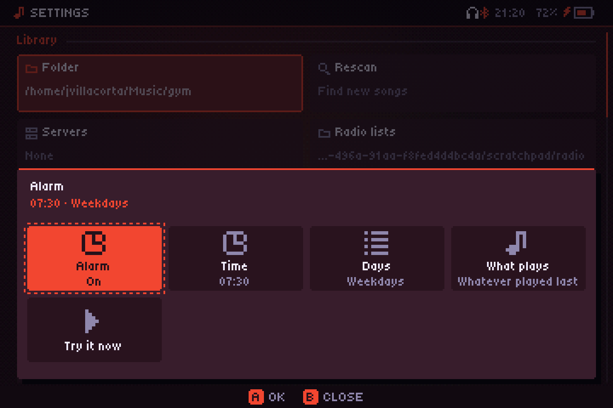

Воспроизведение музыки
«Сейчас играет», очередь, таймер сна и как музыка продолжает играть в фоне.
Сейчас играет

- A или Y ставит на паузу и продолжает.
- Нажми ←/→ для предыдущей или следующей песни; удерживай, чтобы перематывать назад или вперёд. L1/R1 тоже переключают песню, а L2/R2 перематывают на 10 секунд.
- X включает или выключает перемешивание; двойное X включает случайную песню.
- ↑/↓ скретчат пластинку.
- B ведёт в библиотеку, START открывает меню «Ещё».
В меню «Ещё» есть альбом и исполнитель, Текст, Нравится, Оценка, Таймер сна, В плейлист, Сохр. очередь, Очередь, Перемешать, Повтор (Выкл, Все, Одну), Выключить экран, Уйти в фон и Выйти.
Когда играет станция или подкаст, B возвращает в Радио или Подкасты, а не в библиотеку.
Визуализатор на фоне
Ещё → Визуализатор на фоне показывает за экраном «Сейчас играет» визуализатор, выбранный последним на экране Визуализатор. Он приглушён и смешан под фоном темы, так что пульсации фона по-прежнему видны, а обложка, текст и кнопки остаются сверху. Он всегда в цветах альбома (MilkDrop тоже) и прячется, пока открыт текст песни. По умолчанию выключен, потому что тратит больше заряда; в значении видно, какой визуализатор используется.
Аудиокниги
Книга — это файл .m4b, всё с жанром «аудиокнига» или всё в папке с названием Аудиокниги (а также Audiobooks, Hörbücher и похожих на других языках). Книга из нескольких файлов — это её папка, а каждый файл — глава.
- Запоминает, где ты остановился в каждой книге (файл и секунду), даже если в промежутке играла музыка. Включи книгу с начала — и она продолжится с того места; выбери главу сам — и начнётся с неё. Ещё → С начала начинает заново.
- Главы в файлах
.m4bи MP3 видны под названием (Глава 3/12 · Название); Ещё → Главы показывает список. Длинное время показывается с часами, например 1:02:05. - L1/R1 меняют главу (или файл), а короткое нажатие ←/→ перематывает на 30 секунд назад или вперёд; при удержании перемотка продолжается.
- Ещё → Скорость: от 0,75× до 2× без изменения высоты тона. Работает для аудиокниг и подкастов; музыка всегда играет с обычной скоростью.
У аудиокниг вместо вращающейся пластинки показывается кассета, а если у книги нет обложки — маленькая книжка.



Будильник
Настройки → Будильник: Время, Дни (Каждый день, По будням, По выходным или Один раз) и Что играет (Последнее, что играло, плейлист или избранная станция). Громкость нарастает в течение минуты. Его включает служба, поэтому он работает и с закрытым плеером, а на портативных консолях ставит часы консоли, чтобы разбудить её из сна (но не если она выключена). Если консоль проснётся больше чем на 10 минут позже, он не зазвонит. Проверить его проверяет.

Очередь
Экран Очередь показывает, что будет играть дальше. Играть следующей ставит песню сразу после текущей; В очередь — в конец. Воспроизведение идёт без пауз, пауза плавно затухает, а очередь и позиция переживают перезапуск.
Таймер сна
Сейчас играет → Ещё → Таймер сна. Каждое A переходит к следующему варианту: 15, 30, 45, 60 или 90 минут, До конца песни или выкл. На обложке появляется луна с оставшимися минутами. Таймер держит сервис, поэтому он работает и при закрытом плеере.

Фоновое воспроизведение
Музыка живёт в отдельном сервисе, а плеер — всего лишь пульт. От того, как его закрыть, зависит, что будет с музыкой:
- Уйти в фон (меню «Ещё» или Настройки → Выход): плеер закрывается, а музыка продолжает играть, в том числе внутри игр. Консоль засыпает как обычно.
- Выйти: останавливает всё.
- Если закрыть его иначе (закрыть окно, SELECT+START в PortMaster или при сбое), всё зависит от Настройки → Играть после закрытия: на компьютере по умолчанию включено, на портативных консолях — выключено.
Управление из игры
Нажми FN три раза подряд, затем в течение 1,5 секунды:
| Затем | Действие |
|---|---|
| L1 / R1 | Пред. / след. песня |
| L2 / R2 | Назад / вперёд 10 с |
| SELECT | Пауза / продолжить |
Работает всегда, при открытом или закрытом плеере, и не конфликтует с системой или эмуляторами.
Сон: экран выключен, музыка играет
Сон выключает экран и снижает частоту процессора, пока играет музыка, так что консоль может ехать в кармане. Войти в него можно двойным START, кнопкой питания, закрытием крышки, через Сейчас играет → Ещё → Выключить экран или после бездействия (Настройки → Сон через). Во сне курки становятся жестами:
| Жест | Действие |
|---|---|
| L1/R1 дважды | Пред. / след. песня |
| L2/R2 дважды | Назад / вперёд 10 с |
| L1+L2 вместе, дважды | Пауза / продолжить |
| R1+R2 вместе, дважды | Случайная песня |
| START или кнопка питания | Разбудить (кнопкой питания — не при закрытой крышке) |
Одиночное нажатие ничего не делает, так что случайные нажатия в кармане не считаются. На устройствах с вибромотором каждый жест даёт короткую вибрацию. На RG34XX-SP во сне потребление около 260 мА: примерно 11–12 часов музыки.
На компьютере сон и его настройки не нужны и скрыты.
С подключённым внешним экраном (HDMI) закрытая крышка не выключает экран: можно играть с геймпадом и закрытой консолью.
Кнопки наушников
Кнопки Bluetooth- и проводных наушников управляют музыкой при открытом или закрытом плеере. Гарнитура с одной кнопкой работает по обычной схеме: одно нажатие — пауза, два — следующая песня, три — назад.
Если отключить проводные наушники, музыка встаёт на паузу, даже с закрытым плеером, чтобы внезапно не заиграть из динамика.
Открытие файлов из файлового менеджера
Файлы и папки, открытые в audiofilus, играют как временная очередь: папки раскрываются со всем содержимым, и ничего не сохраняется как плейлист (чтобы сохранить, используй Сохр. очередь). Если плеер уже открыт, он просто переключается на новую очередь.
- Linux: правый клик → Открыть с помощью → Audiofilus, для аудиофайлов, списков M3U/PLS, CUE-файлов, музыки консолей и папок (настраивается установщиком или
audiofilus desktop install). - Windows: audiofilus регистрирует себя при первом открытии: Открыть с помощью для всех поддерживаемых файлов и Play with Audiofilus для папок. Если выбрать несколько файлов, все встанут в очередь.
- iPhone и iPad: «Открыть в» или «Поделиться» из «Файлов» и других приложений.
На компьютере
- Медиаклавиши и панели: в Linux audiofilus поддерживает MPRIS, поэтому медиаклавиши и медиавиджет рабочего стола управляют им.
- Системный трей (Linux и Windows): клик открывает плеер, средний клик — пауза, а в меню — что играет, пауза/воспроизведение, следующая, предыдущая, перемешивание и выход.